Teaching dossier. Nineteen years teaching design
students to think through making, in craft, code and AI.
Associate Professor of Practice, School of Design
Graphic Era Deemed to be University, Dehradun
MDes Digital Futures, OCAD University. MSc Product Design, Coventry University.
For a clean PDF, open More settings in the print dialog and untick
Headers and footers.
The teaching record
700
first-year students learned 3D printing in a single studio I designed at
UID, Gandhinagar, in November 2021.
48
studios and workshops documented since 2017
3,922
contact hours in the studio
2,737
students from foundation to postgraduate
7
institutions in India, Canada, Germany and Singapore
How I teach
Every studio runs the same way: frame the problem, make it with your
hands, then critique it together.
Frame20–30 minGuided making60–90 minCritiqueto close
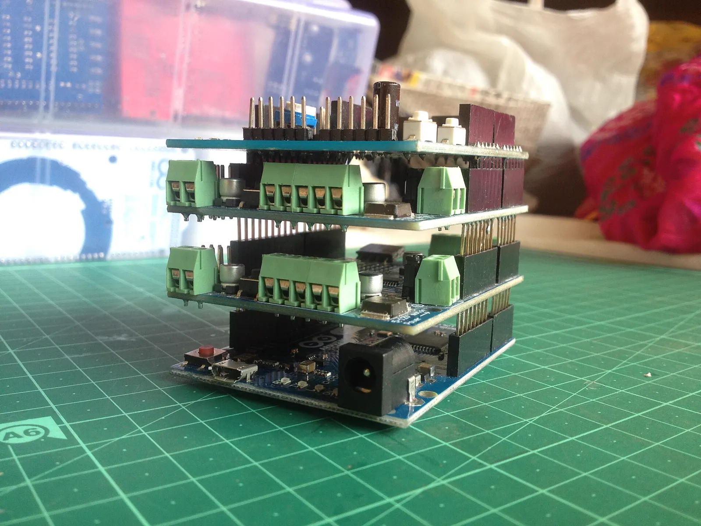
An Arduino with stacked shields, the kit of Physical Computing.
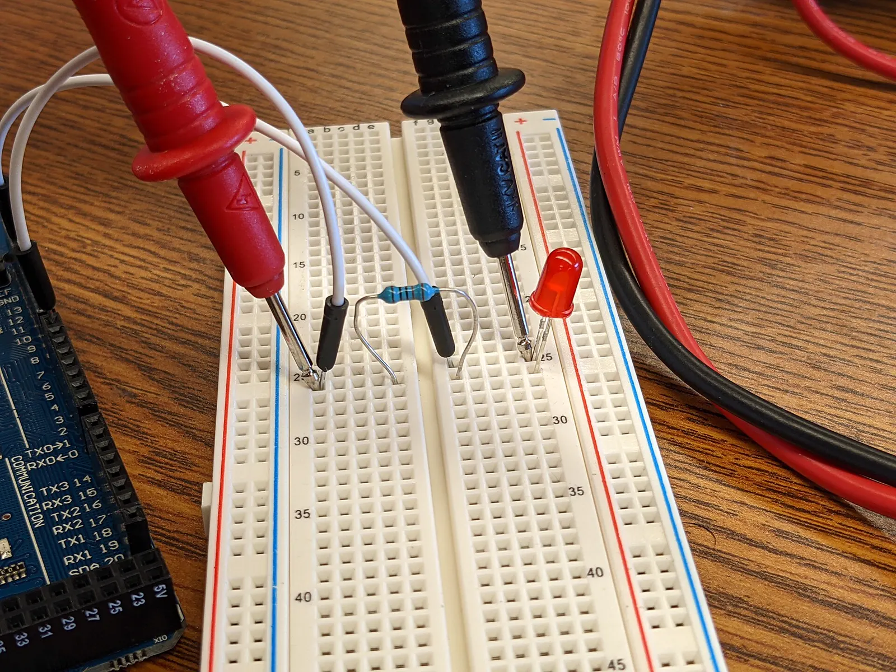
Probing a breadboard circuit: the bug traced in the open.A paper plane, the brief of Beyond the Fold for 300 students.
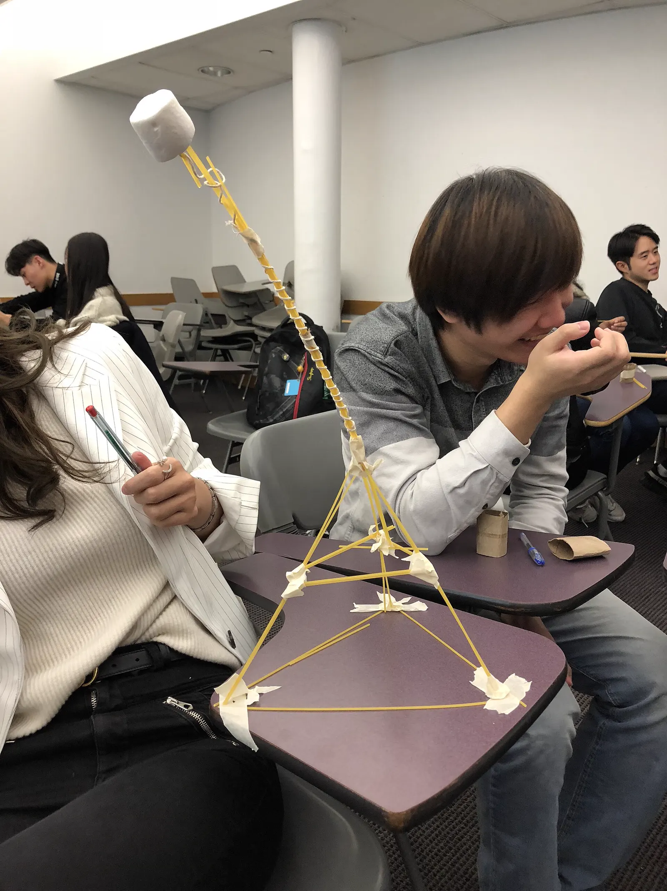
A spaghetti and marshmallow tower, the brief of Marshmallow Tower Wars for 350
students.
Four convictions
Grounded in constructivist pedagogy, Universal Design for Learning
and critical technical inquiry, at the point where craft meets code and human intuition meets machine
intelligence.
Learning through making
Design is an action-biased practice, not an abstract theory. In studios such as
Interactive Products and Physical Computing, students build working
microcontroller circuits, drive physical actuators and test prototypes with external mentors
instead of wireframing interactions they never touch. Soldering a sensor and fine-tuning a
custom LoRA diffusion model are both forms of thinking. Assessment follows: rubrics weight
process documentation, iterative experiments and honest failure at 40 against 60 for the final
artefact.
Computation for everyone
Makerspaces and code can intimidate students who do not see themselves as technical. In
foundation courses such as Programming 1: Creative Coding and Programming 2:
Physical Computation, I code live on the projector, say each decision out loud, make
deliberate syntax errors and trace the bugs with the class in real time. Code is treated not as
a branch of software engineering but as a material, as plastic as clay or timber.
Questioning as method
I want students to leave with judgement, not ready-made answers. In speculative studios such as
Design Fiction and Future Labs, cohorts work with questions that resist quick
closure: what does design owe future generations, which communities do current generative
models leave out, and how is designing with AI different from using it as a production pipeline?
Worldbuilding and diegetic prototyping turn their scepticism into responsible proposals, several
of which have gone on to win international awards.
An ethic of care
Teaching is a labour of care. Having taught cohorts in Canada, India, the UK, Germany and
Singapore, I plan for different cultural assumptions, languages and ways of learning. High-stakes
grading can penalise a student whose thinking is sophisticated but whose English is still
developing, so my studios provide modular open-source code scaffolds, bilingual vocabulary aids
and steady office hours, in a room built on psychological safety and mutual dignity.
Seven institutions, four countries
Nineteen years between engineering and the design studio: from CAD and finite element
training for engineering teams, to running a programme in Singapore, to setting up the labs of a
new design school in Dehradun.
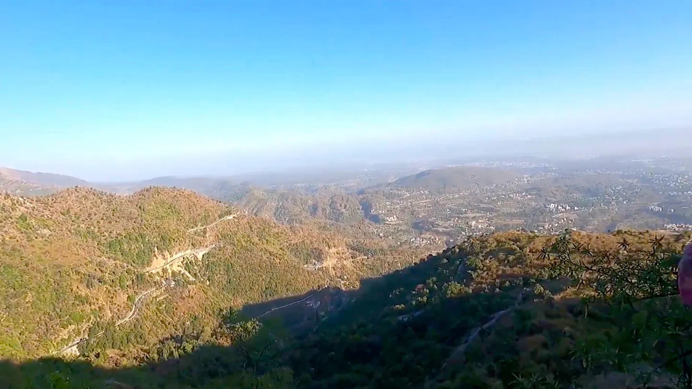
The Doon valley from the Kipling Trail, Dehradun.
Graphic Era Deemed to be University
Associate Professor of Practice, School of Design. Dehradun, India, 2025 to
now.
11 studios and bootcamps, 481 contact hours, 912 students.
Set up the AI Lab (30 NVIDIA RTX 5080 Blackwell workstations), the Physical Computation Lab
and the wood and metal workshop. On the Board of Studies, writing curriculum descriptors and
rubrics for Foundation and Industrial Design. Designed bootcamps at scale: Marshmallow Tower
Wars for 350 students and Beyond the Fold for 300.
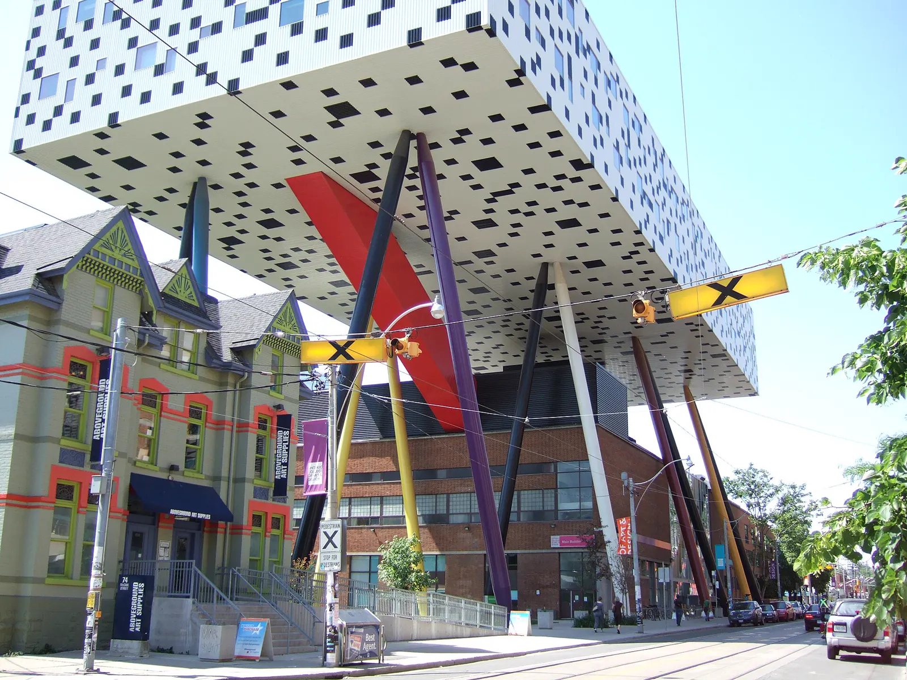
The Sharp Centre for Design, OCAD University, Toronto.
OCAD University
Graduate fellow and academic assistant, Faculty of Graduate Studies.
Toronto, Canada, 2023 to 2025.
MDes Digital Futures, six A and A+ grades, thesis passed without
condition.
Academic assistant for the Inclusive Design master’s programme (INCD-6017, 6009, 6010).
Research assistant at IDEA Hub 5 on AI equity and disability communication. Experiment
designer at the ACE Lab on the MAFA and OMAFRA project, building evaluation protocols for AI
and mixed reality and writing TCPS2 research ethics protocols with Dr. Alexis Morris and
Dr. Sara Diamond.
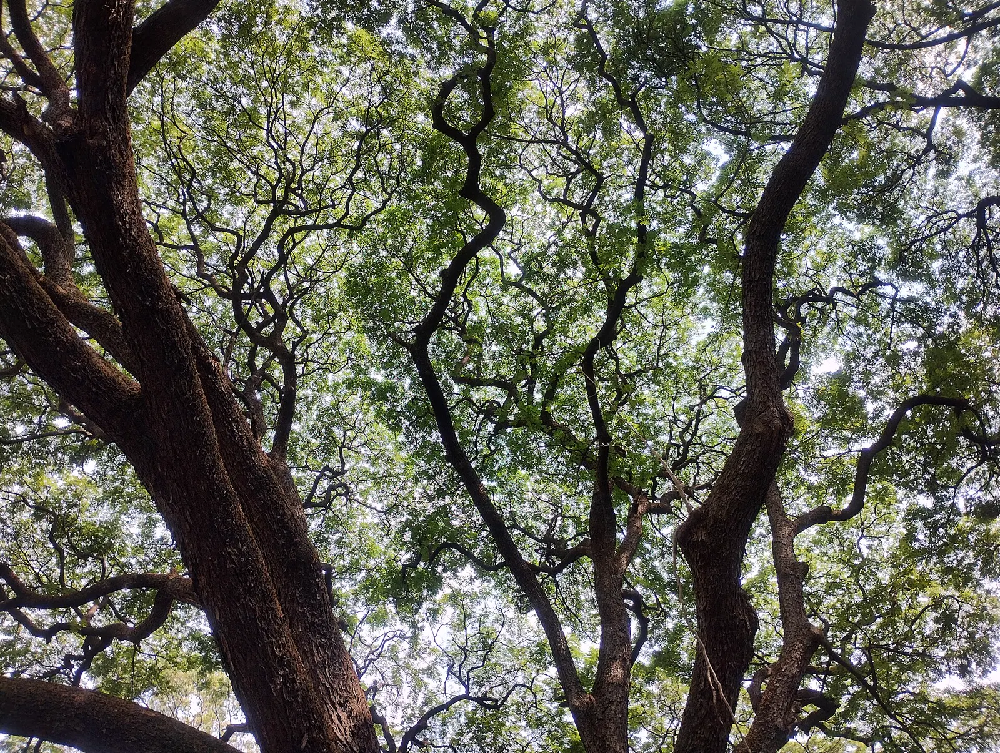
The canopy of Cubbon Park, Bengaluru.
Pearl Academy, Bengaluru
Associate Professor. Bengaluru, India, 2022 to 2023.
12 studios, 610 contact hours, 71 students.
Undergraduate and postgraduate studios in representation, 3D modelling, interactive tools,
ergonomics, physical computing, immersive technology and visual scripting in VVVV, and
supervision of interaction design graduation projects.
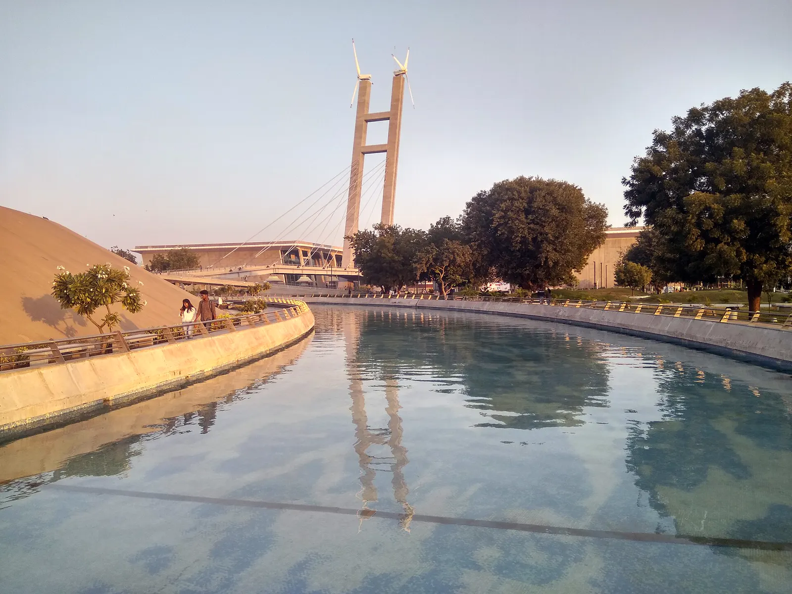
The Mahatma Mandir, Gandhinagar.
Unitedworld Institute of Design, Karnavati University
Associate Professor and Chair of the Portfolio Assessment Team. Gandhinagar,
India, 2021 to 2022.
10 studios, 675 contact hours, 1,471 students.
Led the 700-student introduction to 3D printing with modular packets and calibrated peer
review, and taught sustainable design, new media, digital rendering, computing systems and
technically complex product design from foundation to master’s level.
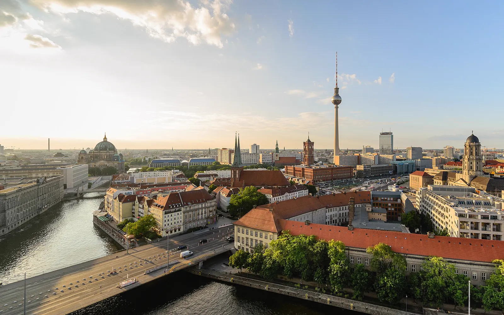
Berlin Mitte and the Spree.
University of Applied Sciences Europe
External reviewer and master’s thesis examiner. Berlin, Germany, 2022.
Examined master’s theses in Visual and Experience Design for the summer semester of 2022.
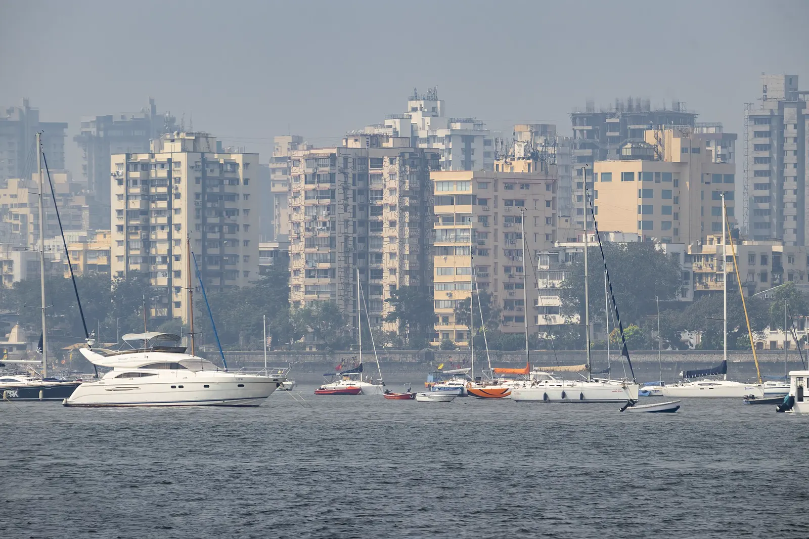
Sail boats in front of the Mumbai skyline.
Pearl Academy, Mumbai
Associate Professor for four years and eight months. Mumbai, India, 2017 to
2021.
15 studios, 2,156 contact hours, 283 students.
Curriculum lead and capstone supervisor in industrial, interaction and communication design,
with placement liaison. The graduation projects supervised here went on to win Gold at the
IDA Design Awards, EPDA and DNA Paris.
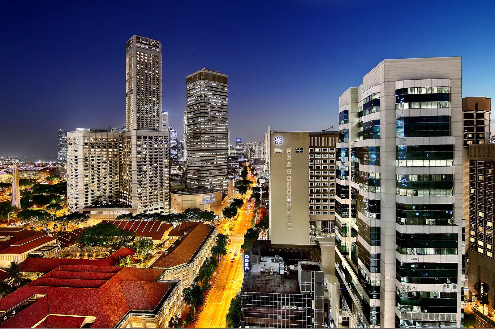
Bras Basah, Singapore, at dusk.
Raffles College of Design and Commerce
Programme Director for four years. Singapore and Bengaluru, 2013 to 2016.
31 studio modules in product and furniture design.
Academic governance and syllabus delivery across two campuses. Before that, from 2008 to 2012,
CAD and finite element analysis faculty at ProSIM R&D and EduCADD, then consultant at EDS
Technologies and Geometric, training engineering teams at Mercedes-Benz, Volvo, Ford, Boeing,
Airbus and the Indian Navy.
Every studio since 2017
The full register from the class database. Choose an institution to see its share.
48 studios, 3,922 hours, 2,737
students
Studios and workshops taught, newest first
Studio
Level
Institution
Load
Month
2026
Design Studio 1: Lighting Design
Industrial Design, semester 3
Graphic Era
45 h, 8 students
Jul
Technical Drawing and 3D Modeling
Industrial Design, semester 3
Graphic Era
45 h, 8 students
Jul
Ergonomics in Product Design
Industrial Design, semester 3
Graphic Era
45 h, 8 students
Jul
Beyond the Fold: paper planes
Aspirant bootcamp
Graphic Era
8 h, 300 students
Jul
Programming 2: Physical Computation
Foundation
Graphic Era
45 h, 43 students
Feb
Design For and With AI
Foundation
Graphic Era
45 h, 43 students
Jan
Biophilic Design
Foundation
Graphic Era
45 h, 43 students
Jan
2025
Visualization and Representation
Foundation
Graphic Era
75 h, 33 students
Sep
Programming 1: Creative Coding
Foundation
Graphic Era
75 h, 43 students
Aug
Interaction Fundamentals
Foundation
Graphic Era
45 h, 33 students
Jul
Marshmallow Tower Wars
Aspirant bootcamp
Graphic Era
8 h, 350 students
Jul
2023
Advanced Digital Tools 2
UG year 2
Pearl Bengaluru
64 h, 6 students
Aug
Interaction Design: Graduation Project
PG year 2
Pearl Bengaluru
10 h, 12 students
Jun
Core Principles of Programming
PG year 1
Pearl Bengaluru
8 h, 2 students
Jun
Ergonomics
UG year 1
Pearl Bengaluru
64 h, 5 students
Apr
Visual Scripting in VVVV
PG year 1
Pearl Bengaluru
16 h, 10 students
Apr
Advanced Digital Tools
UG year 2
Pearl Bengaluru
64 h, 3 students
Mar
Immersive Technology
PG year 2
Pearl Bengaluru
64 h, 5 students
Feb
Interactive Tools, second cohort
UG year 2
Pearl Bengaluru
64 h, 5 students
Feb
Interactive Tools, first cohort
UG year 2
Pearl Bengaluru
64 h, 3 students
Jan
2022
Physical Computing
PG year 2
Pearl Bengaluru
64 h, 12 students
Nov
Design Representation
UG year 1
Pearl Bengaluru
64 h, 5 students
Oct
3D Modelling
UG year 2
Pearl Bengaluru
64 h, 3 students
Oct
Digital Exposure 1
UG year 1
UID
80 h, 70 students
Aug
Technically Complex Product Design
PG year 1
UID
100 h, 17 students
Aug
Interdisciplinary Design Project
UG year 1
UID
100 h, 71 students
Apr
Introduction to Computing Systems
Foundation
UID
80 h, 39 students
Apr
Digital Rendering
UG year 2
UID
35 h, 104 students
Feb
New Age Media
Foundation
UID
80 h, 171 students
Jan
Introduction to Sustainable Design
UG year 3
UID
80 h, 91 students
Jan
Digital Exposure 2
UG year 2
UID
40 h, 104 students
Jan
2021
Reduce, Reuse and Recycle workshop
UG year 2
UID
40 h, 104 students
Nov
Introduction to 3D Printing
Foundation
UID
40 h, 700 students
Nov
2020
Open Labs 2.0: UX and UI
UG year 2
Pearl Mumbai
120 h, 13 students
Nov
Portfolio workshop
UG year 3
Pearl Mumbai
120 h, 13 students
Nov
Future Labs and Social Enterprise
UG year 2
Pearl Mumbai
80 h, 40 students
Oct
Usability in Practice
UG year 2
Pearl Mumbai
160 h, 24 students
Sep
3D Tools
UG year 2
Pearl Mumbai
160 h, 24 students
Mar
Interactive Tools
UG year 2
Pearl Mumbai
160 h, 24 students
Feb
2019
Design Fiction
UG year 2
Pearl Mumbai
160 h, 24 students
Oct
Experience Design
UG year 3
Pearl Mumbai
160 h, 13 students
Sep
Rhino Modelling
UG year 2
Pearl Mumbai
160 h, 24 students
Sep
Open Labs 2.0: Portfolio
UG year 2
Pearl Mumbai
120 h, 24 students
Aug
Design Methods
UG year 2
Pearl Mumbai
160 h, 24 students
Jul
Graduation Project Supervision
UG year 3
Pearl Mumbai
160 h, 4 students
Jan
2017
Immersion
Foundation
Pearl Mumbai
116 h, 8 students
Jun
Interactive Products
PG year 1
Pearl Mumbai
160 h, 12 students
May
Industrial Product Development
PG year 1
Pearl Mumbai
160 h, 12 students
Mar
Not in the register: 31 modules at Raffles (2013 to 2016), graduate teaching
at OCAD University, and corporate CAD and FEA training from 2008 to 2012.
What the studios cover
Computation, AI and creative code
Design For and With AI, physical computing, creative coding in p5.js, Python and Rhinoscript,
LoRA training and ComfyUI workflows, immersive technology.
Making and digital fabrication
3D printing at 700-student scale, Rhinoceros 3D, KeyShot and Cinema 4D rendering, lighting
design, technically complex product design, the model workshop.
Methods and speculative inquiry
Design fiction, Future Labs and social enterprise, biophilic and sustainable design, usability
in practice, systems design.
Interaction and UX
Interactive products, graduation project supervision, Open Labs UX and UI, ergonomics and
anthropometry, Universal Design for Learning.
What students went on to do
Graduation projects from industrial design studios I supervised at Pearl Academy, and
where their designers work now.
Artemis 389
Anuja Tripathi
Gold Award, IDA Design Awards 2021
Top Winner, European Product Design Awards 2020
Winner, DNA Paris Design Awards 2021
Featured in the iF World Design Guide 2020
Finalist, IxDA Interaction Awards 2021
Now in Stockholm, after a master’s at Umeå Institute of Design.
Kara 108RG
Shraddha Kumbhar
Global Grad Show, Dubai Design Week 2020, selected by Caroline Roux
Featured in Dezeen, Asia Today and Disruptive Asia
Most Professional Project, graduation showcase
Now in Vancouver, a product designer at Standard Fusion and Esvedra
Wellness.
Carapace
Vaishnavi Shiroorkar
Environmental Sustainability Award, TISDC 2022
Awards in Society and Life Safety, IDA Design Awards 2022
Winner, European Product Design Awards 2023
Winner, DNA Paris Design Awards 2023
Finalist, London International Creative Competition 2022
Now in London after a master’s at the RCA, leading social enterprise and
emergency shelter design.
Budding Buddy
Shivani Jadhav
First Prize, Awwchitecture Design Competition 2019
First Prize, ADI Battle of the Projects, Pune Design Fest 2020
Course Winner, Adobe XD RMIT UX Awards 2021
Now in Melbourne, an industrial and graphic designer at Ozito, after
graduate study at RMIT and the University of Melbourne.
Karat
Harsh Lotiya
Featured design, Design:Impact Awards 2020
Now in Dublin after a master’s at UCD, designing consumer products.
Teemo
Harshit Tareja
Shortlisted, Design Singapore Council Awards
Now in Singapore, an interaction designer.
Rhea Matthew
Industrial design graduate
Corporate CEO Award, the only designer recognised across the organisation
Now in Loughborough after a master’s at Loughborough University, a senior UX
and product design lead.
Awards won by students
IDA Gold EPDA DNA Paris Dubai Design Week
Dezeen iF Design Guide IxDA TISDC
IDA Gold EPDA DNA Paris Dubai Design Week Dezeen iF Design Guide IxDA TISDC
Awards and features won by student projects from studios I supervised.
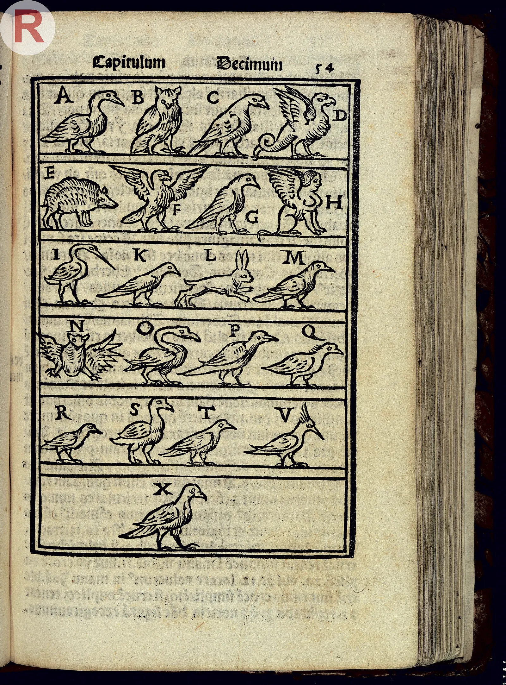
A visual alphabet of birds from Johann Romberch’s Congestorium artificiose
memorie, 1520, a manual of the memory arts.
Research and honours
My master’s thesis, “From Method of Loci to Digital
Mnemonics”, asks how AI and augmented reality could rebuild the memory palace. Defended at
OCAD University on 16 April 2025 and passed without condition, advised by Dr. Alexis Morris and
Dr. Sara Diamond.